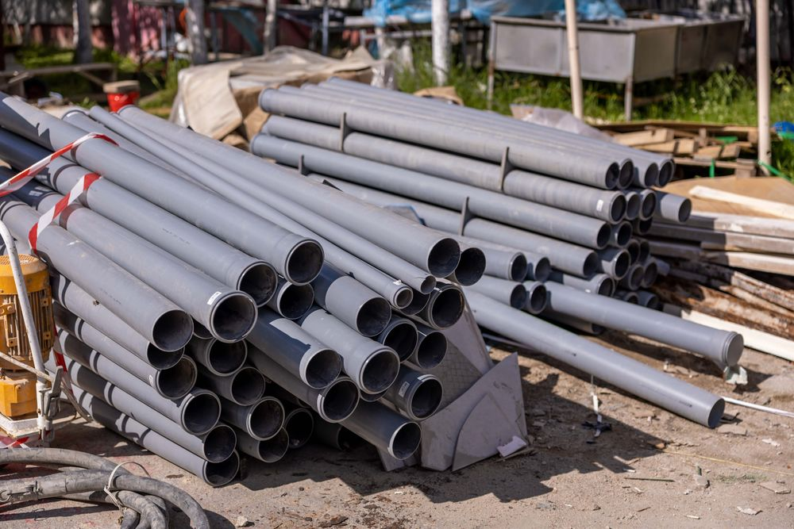
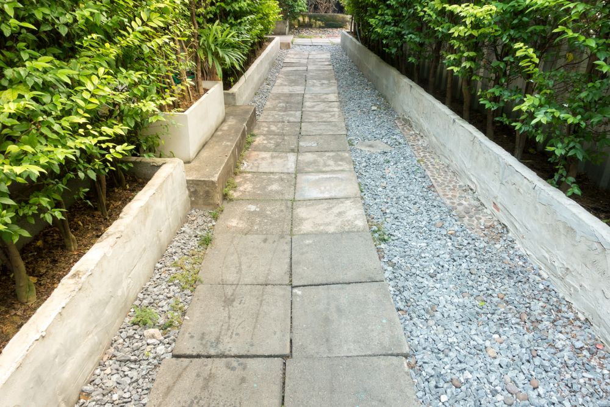

Grävning och markarbeten
Schaktning, planering och förberedelse av mark inför husbygge, tillbyggnad, garage och andra anläggningsprojekt.
Mark- och anläggningsarbeten för byggprojekt, trädgårdar och utemiljöer i Sätila och Marks kommun.
Begär en offertMark- och anläggningsarbeten för husbyggen, tomter och utemiljöer. Hör av dig med ditt projekt så berättar vi vad vi kan hjälpa till med.
Schaktning, planering och förberedelse av mark inför husbygge, tillbyggnad, garage och andra anläggningsprojekt.
Dränering runt husgrund och på tomtmark, så att vatten leds bort och grund och källare skyddas mot fukt.

Markarbeten för avloppslösningar – schakt, ledningsdragning och återfyllning.
Stenläggning av uppfarter, gångar och uteplatser, med ett ordentligt bärlager under.
Stödmurar och murar i sten eller block för slänter, terrasser och nivåskillnader på tomten.

Markarbeten i trädgårdar – nivåer, gångar, ytor och grund för planteringar.
Dränering
En fungerande dränering leder bort vatten från husgrunden innan det hinner orsaka fukt i källare och bjälklag. Arbetet avgörs av detaljerna: rätt fall på marken, dränerande återfyllning, makadambädd och rör som ligger i rätt nivå.
Skissen visar principen. Hur din dränering ska utföras beror på grunden, marken och hur vattnet rör sig på tomten – det går vi igenom innan vi lämnar offert.
Begär offert på dräneringHär har vi samlat råd som är bra att känna till innan markarbetet börjar.
Dränering
Fuktfläckar eller mögellukt i källaren, vita saltutfällningar på källarväggen och vatten som tränger in vid kraftigt regn är vanliga signaler.
En dränering har begränsad livslängd – ofta anges 30–50 år. Rör kan slammas igen eller gå sönder, och äldre hus saknar ibland fungerande dränering helt. Börja med att se över stuprör och markens lutning: vattnet ska ledas bort från huset. Hjälper inte det kan det vara dags att gräva fram grunden och lägga ny dränering med isolering och dräneringsskiva.
Stensättning
Sätter sig stenarna eller växer ogräs i fogarna beror det oftast på det som ligger under – inte på stenen.
Under marksten behövs ett bärande lager av krossmaterial som packas i omgångar, och ett tunt lager sättsand som stenen läggs i. En uppfart som ska bära bil kräver kraftigare underbyggnad än en gång eller uteplats. Ytan ska också ha fall så att vatten rinner av i stället för att bli stående.
Avlopp
Ska du anlägga eller göra om ett enskilt avlopp behöver du i regel söka tillstånd eller göra en anmälan hos kommunen innan arbetet startar.
Kommunens miljöförvaltning bedömer bland annat markförhållanden och avstånd till vattentäkter. Det är därför bra att ta kontakt tidigt och planera markarbetet utifrån det beslut som kommer. Själva grävningen – schakt, ledningsdragning och återfyllning – kan sedan planeras när förutsättningarna är klara.
Från första samtalet till färdig yta.
Ring eller skicka en förfrågan med en kort beskrivning av jobbet och var det ska utföras.
Vi går igenom förutsättningarna, gärna på plats, så att offerten bygger på verkliga förhållanden.
Du får en offert utifrån dina behov, med tydligt angivet vad som ingår.
Arbetet utförs enligt överenskommelse och stäms av med dig under tiden.
Hällingsjö Entreprenad arbetar med mark- och anläggningsarbeten för olika typer av projekt – från dränering av en villagrund till maskinarbete åt andra entreprenörer. Verksamheten utgår från Sätila i Marks kommun.
Diskutera ditt projektSnabbast når du oss på telefon. Du kan också skicka en förfrågan via formuläret.
072-573 85 61